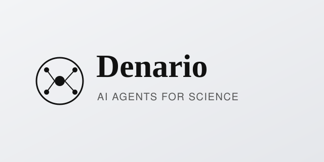
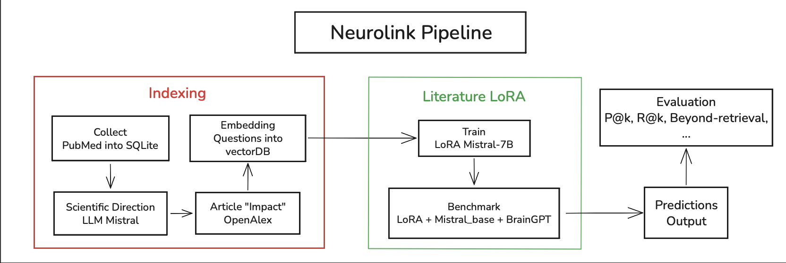

Applied researcher building agentic AI, LLMs, and systems for Science.
Currently an MPhil student at the University of Cambridge, I am an AI for Science researcher. I design agentic architectures, fine-tune and evaluate LLMs, and ship open-source research software used in real scientific workflows.
My recent work spans collaborations across leading labs and institutions, including Denario, an open-source multi-agent system developed with the University of Cambridge, Cancer Research UK, and the Flatiron Institute to automate end-to-end scientific discovery, Neurolink at ENS Paris for forecasting emergent neuroscience directions from PubMed, and MMORE at EPFL, a multimodal RAG architecture for clinical decision support.

University of Cambridge, UK
Contribution to Denario, a multi-agent AI system for end-to-end scientific discovery: hypothesis generation, analysis, and manuscript drafting.

ENS Ulm, Paris
Modular pipeline to forecast emergent neuroscience research directions from PubMed literature. Temporal LoRA on Mistral-7B, benchmarked against BrainGPT and Mistral-7B base.
EPFL, Switzerland
Multimodal open RAG & extraction pipeline at EPFL (Swiss AI Lab): unified ingestion, hybrid retrieval, medical QA including contributions to the RAG stack.